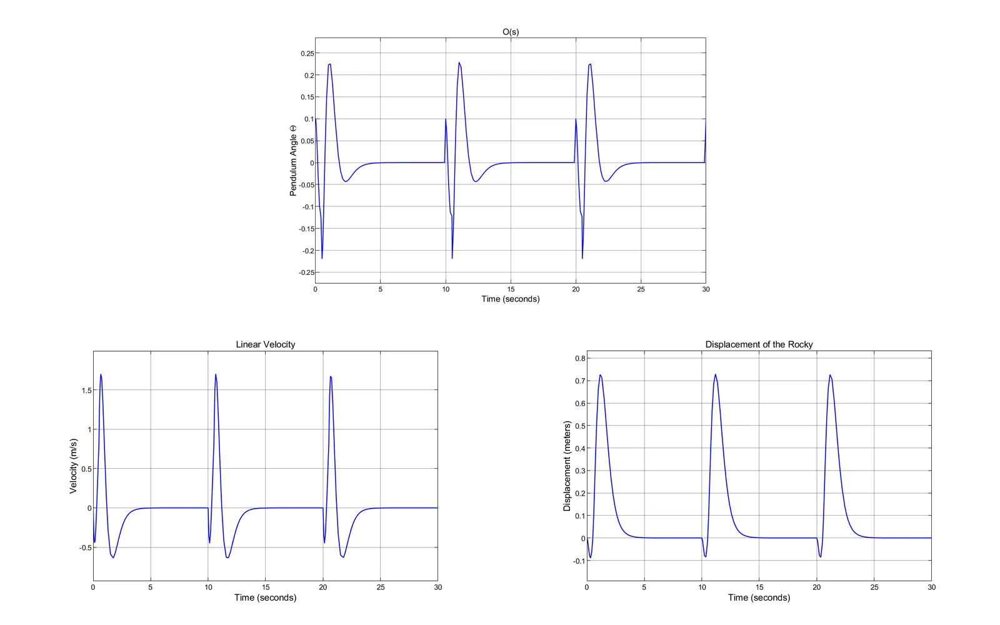
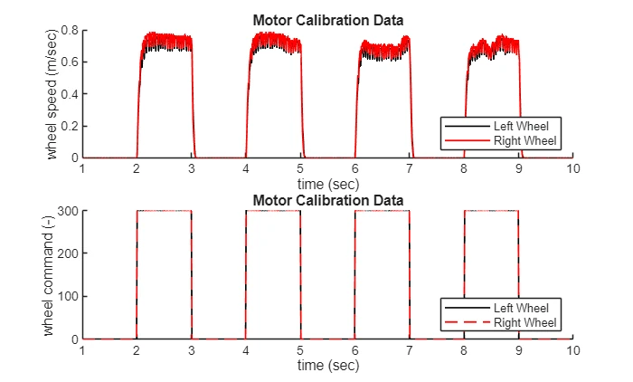
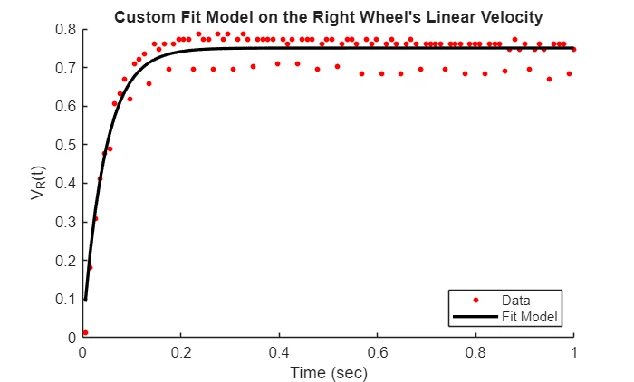
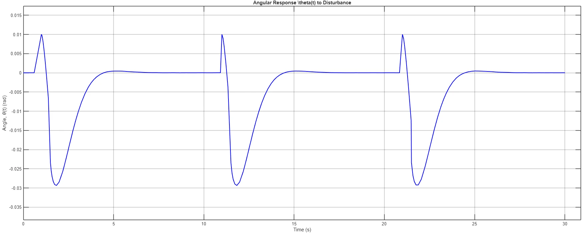
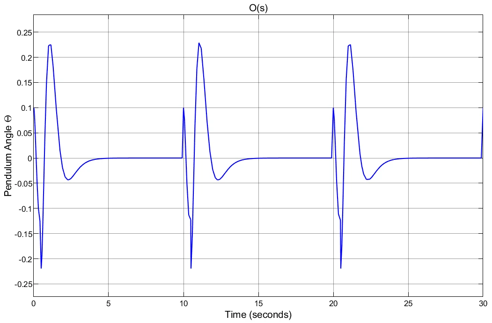
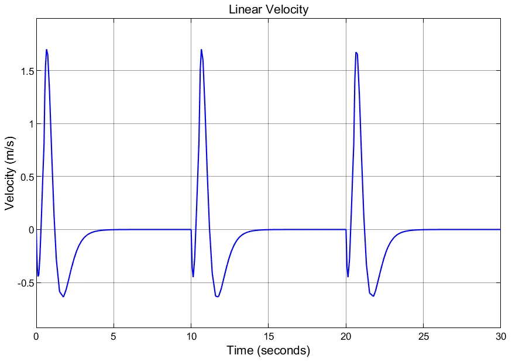
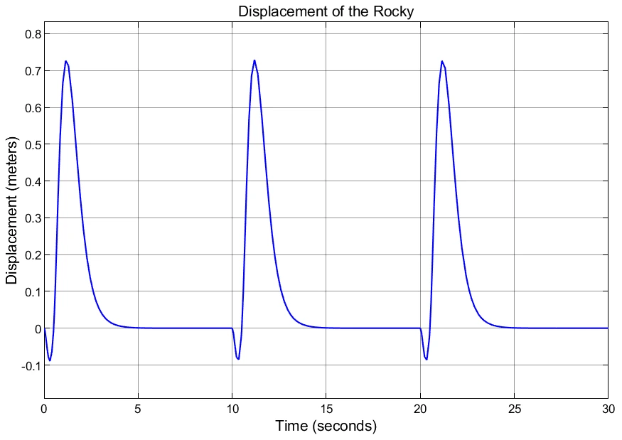

Rocky balancing robot
A team controls project that identified motor and pendulum dynamics from experimental data, then developed and tested controllers for a self-balancing inverted-pendulum robot.

System identification
Motor calibration data were collected by applying step commands to both wheel motors while recording wheel velocities with an Arduino-based setup. The measured response was imported into MATLAB and fitted to a first-order model.
The fit produced a motor decay rate of approximately 21.98 s⁻¹, a time constant of about 0.0455 s, and motor gain of approximately 0.0025. A separate free-response test of the pendulum produced a natural frequency of 4.096 rad/s and an effective pendulum length of about 0.5846 m.
First controller: balance without position control
The first closed-loop design used a three-pole controller to regulate body angle. In simulation, the angle recovered after disturbances, but cart velocity and displacement did not return to zero.
That mismatch mattered on the physical robot: the controller could keep correcting the angle while the wheels accelerated and the robot eventually moved too far to remain balanced.
Stationary balancing controller
The second design added feedback around cart motion, creating a higher-order stationary balancing controller. Target poles were selected to produce fast, well-damped angular recovery while avoiding overly aggressive cart motion.
In the five-pole simulation, angle, velocity, and displacement all returned toward zero after repeated disturbances. The physical robot showed similar overall behavior, with extra noise and less-smooth settling due to friction, motor mismatch, and sensor noise.
Visuals
Selected CAD, test data, and simulation outputs from the project.






Robot demo
The project report links to a short video of the physical balancing robot. The physical system showed the same overall behavior as the simulation, with additional real-world noise and settling effects.
More engineering work
Return to the main portfolio for mechanical design, controls, thermal-fluid modeling, and manufacturing projects.